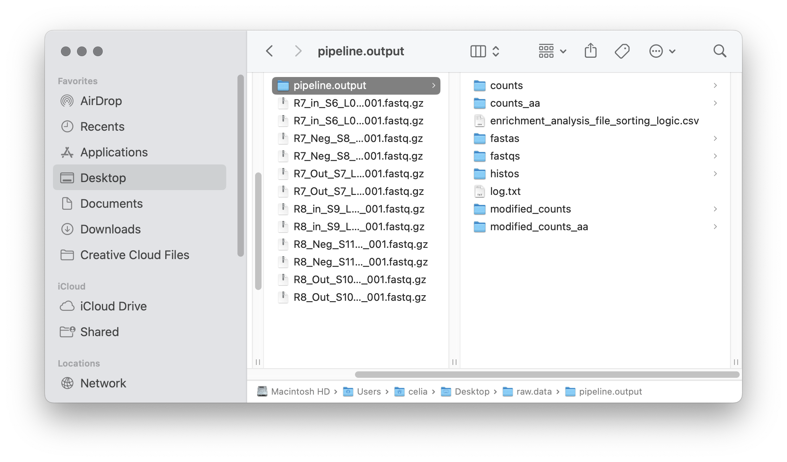
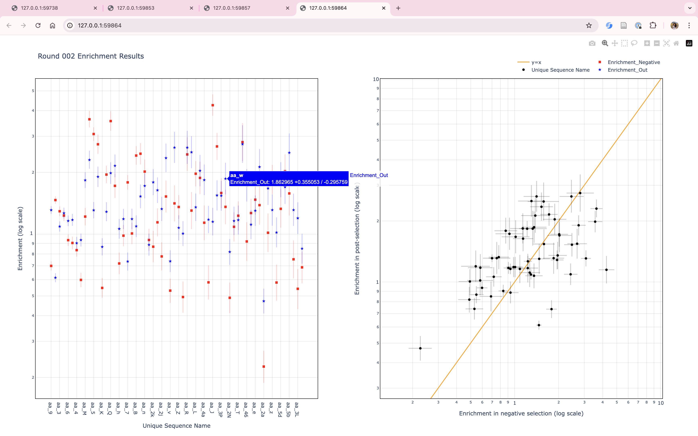

Usage Example¶
Here, we will run both EasyDIVER 2.0 and the graph generator for the test data provided in the GitHub repository (ADD LINK).
EasyDIVER 2.0¶
First, we downloaded the test data and place in a directory called raw.data.
The forward and reverse primers for the test dataset are TACATTACAGCA and GATGGTGATGGTG, respectively.
The test dataset correspods to two rounds of an experimental in vitro evolution of mRNA-displayed
peptides (unpublished), so ‘Translate to Amino Acids’ is selected.

There are 3 samples per round, corresponding to pre-selection, post-selection and negative control selection. Once the number of rounds has been set to 2, the 6 files can be assigned to their corresponding buckets:

After saving choices, the file enrichment_analysis_file_sorting_logic.csv will be saved in the output directory.
Upon submitting the job, the text box in the bottom will start printing real-time information from the run.

Once data processing and analysis is over, the output directory should have seven folders, a log.txt file and the sorting csv table.
In the modified_counts folders there will be one round_00X_enrichment_analysis.csv file for each round. These files will have all metrics for each sequence in the post-selection sample for each round.
For details on how the metrics are calculated see [PAPER REF].
There will also be anotehr six other csv, corresponding to the frequency and the enrichment of all sequences traced across all rounds of selection:
Graph Builder¶
To run the Graph Builder with the processed and analyzed testdata, the input directoy directory must correspond to the output from EasyDIVER 2.0:

Since the dataset corresponds to mRNA-displayed peptides, data type is ‘AA’. For testing purposes, we will plot the metrics corresponding to the last round of selection (round 2). The button “Generate Graphs” will start the graph generation process. Once completed, an html window will open displayignb the plots. If not cutoffs values are specified, the Graph Builder will include all data in the files (in this case, the plots will look crammed and frankly, ugly).

There are two ways in which the user can chose to focus on specific areas or data points in the graphs:
By selecting specific plotting regions. The graphs interface is interactive, and specific areas of the plots can be selected by dragging the mouse.
By setting more astringent cutoff values. The user can fill the values in the Graph Builder interface as many times as needed, and a new html window will open every time “Generate Graphs” is selected.
For example, increasing the Count_out cutoff threshold, reduces significantly the number of datapoints being representedfor
Note
- Display/hide elements
Clicking in the legend elements will display and hide different elements in the grpahs.
- Individual sequence information
Hoovering the mouse over any datapoint will display information about the corresponding sequence.
- Additional options
Hoovering over the top right corner will shop icons with options to: download the plots as png, zoom, pan, box select, lasso select, zoom in, zoom out, autoscale and reset axis.